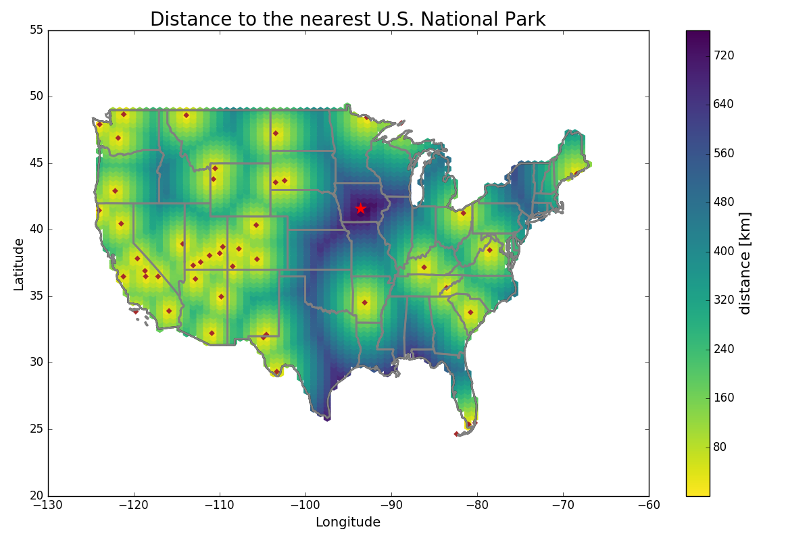

How Far Can You Be From a National Park?
Posted on 04 Oct 2016 in Data science
I really love the US National Park System — I think it's one of the best things about our country. The 400+ sites administered by the National Park Service (NPS) covers a huge range of natural and historical importance. Since 2016 is the 100th anniversary of the National Park Service, I thought it'd be a good opportunity to tackle a long-standing question I've had about the National Parks.
My wife is originally from Iowa, which is in a portion of the country that's not always celebrated for its natural wonders. While that's a relatively subjective statement, there are way fewer NPS sites in the Midwest than other parts of the country. For example, Iowa has only four NPS sites, none of which are National Parks; in contrast, our former home of Colorado has sixteen sites, including four National Parks. My wife has claimed offhand several times that growing up in Iowa, she was as far as one could be in the US from a National Park. Is that true?
This is a pretty quantitative question, and one that I thought I could answer. Here are the assumptions I made:
- For unique sites, I'm considering only the units designated as National Parks (as opposed to National Memorials, National Monuments, National Seashores, etc). They're all sites administered by the NPS, but National Parks have a particular appeal, and they're usually among the largest, most well-known, and/or most-visited sites in the NPS.
- To simplify the query, I limited the area to the 48 states of the continental US. That means I'm eliminating a number of parks from my list: eight in Alaska, two in Hawai'i, and one each in the US Virgin Islands and American Samoa. That leaves a total of 47 National Parks to consider.
- While the parks all have finite boundaries and can be extremely large (Wrangell-St. Elias National Park is bigger than Switzerland, for example), I'm treating the distance to each park to be a single point at its geographic center.
- The "furthest distance" is considered as the crow flies, not driving directions. That makes the problem simpler and allows me to include parks like Isle Royale, Channel Islands, and Dry Tortugas, all of which are located on islands that require air or water transport.
I thought of a couple of different ways to actually solve the problem. The most elegant way would probably be to do a Voronoi tessellation of the 47 park locations. Voronoi diagrams partition a plane based on the distance to a set of points within it. Each convex cell encloses an area that's closest to that point compared to any of the others. The Voronoi cells can be intersected with the exterior polygon of the US to provide the outer boundary. Once that's done, then the point furthest from any National Park must be either a vertex between adjoining Voronoi cells or a vertex between cells and the outer boundary. The distance between those vertices and the points in adjoining cells can individually checked in O(V) time.
There are several different software packages that could make this happen, but a couple hours work didn't end up getting me a solution I was happy with. Python has some capability to handle cartographic data via basemap, but I couldn't get the package to install due to trouble with C compilers. R can also make Voronoi/Dirichlet tessellations, but I couldn't end up making a single non-intersecting polygon of the US border to serve as the outer boundary. I could have coded this all from scratch, but decided to leave it in the interests of time.
I ultimately used Python to find the answer in a brute-force approach (code is on Github). I simply gridded the US and computed the distance to every Park, keeping only the lowest distance. Definitely inefficient, but it gets the job done. And here's the map!

The red star shows the point furthest form any National Park (93.53 W, 41.58 N). As my wife predicted, it is indeed in Iowa — pretty much straight over the capital city of Des Moines, as it turns out. It's roughly equidistant between Badlands National Park in South Dakota, Voyageurs National Park in Minnesota, and Hot Springs National Park in Arkansas, about 760 km away.
The encouraging coda to this is that, according to Google Maps, it's only about an eight-hour drive from this "pole of inaccessibility" to the Badlands. So everyone in the lower 48 does live within a day's drive of a National Park. :)